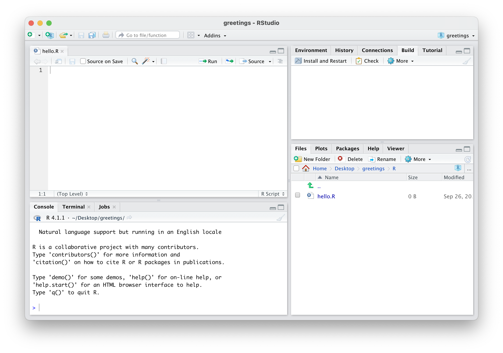

install.packages(c("devtools", "roxygen2"))Pre-lecture materials
Read ahead
Read ahead
Before class, you can prepare by reading the following materials:
Prerequisites
Before starting you must install two additional packages:
devtools- this provides many additional tools for building packagesroxygen2- this provides tools for writing documentation
You can do this by calling
or use the “Install Packages…” option from the “Tools” menu in RStudio.
Acknowledgements
Material for this lecture was borrowed and adopted from
Learning objectives
Learning objectives
At the end of this lesson you will:
- Create an empty R package within RStudio
- Design a R function and write documentation
- Describe what a
DESCRIPTIONfile is and what goes in it - Be able to build and install a R package
Introduction
This lesson will cover how to build R packages using R and RStudio. Using RStudio for this lesson will be critical as RStudio includes a number of tools that make building R packages much simpler.
For the purposes of demonstration in this lesson, we will be building a package called greetings that has a single function called hello(). The hello() function takes a single argument called name (which is required) and makes a plot containing a message directed at name. For example,
library(greetings)
hello("Stephanie")
Admittedly, this is not a useful package, but it allows us to demonstrate all of the necessary ingredients for building a simple R package.
Create a New R Package Project
Creating a new R packages begins with creating a new RStudio project.
You should choose New Directory as this will be a brand new project (not an existing project).
Next, you should choose the “Project Type” as R Package using devtools (you may need to scroll down a little in that menu).

Finally, you should specify the name of your package. For this example, we will use greetings as the name of the package. Also you should double check the name of the sub-directory listed under “Create project as subdirectory of” is a directory that you can find.
Note
The name of this directory should not have any spaces in its name.
Click “Create Project” and allow R and RStudio to restart. You should get a brand new session. You will also see a window with a series of tabs. One of those tabs will be called Build and that will be important as we build our package.
Configure Build Tools
The next step after creating a new project is to configure your build tools. Click on the Build tab and then More and then Configure Build Tools….
In the next screen, you should make sure that the check box for Generate documentation with Roxygen is checked. Then click the Configure… button.
In the next menu, make sure to check the check box for Install and Restart.
Then click “OK” and then “OK” again to exit the options menu.
R Package Files
In this session, there will be the following files listed in the file browser.
The files we will focus on here are
- the
DESCRIPTIONfile; and - any files in the
Rsub-directory. This package will only have one R script in theRsub-directory.
There is no need to worry about the other files for now.
Edit main files
Now, we need to write the R code and documentation for our one function in this package.
Add a R Script file
First, create an R script in which the R code will go. You can do this by clicking on File > New File > R Script.
Note
Make sure that your R script is saved inside the R/ sub-directory.

Next, once you have your R Script created, you can start to write the function and the documentation.
Note
The idea is that when you write a function in a R package, just above the function is the documentation. The function is written in the usual way and the documentation is written using a special style.
Documentation
Let’s start with the documentation. Here is the documentation for the hello() function.
#' Print a Greeting
#'
#' Print a greeting for a custom name
#'
#' @details This function make a plot with a greeting to the name passed as an argument to the function
#'
#' @param name character, name of person to whom greeting should be directed
#'
#' @return nothing useful is returned.
#'
#' @import ggplot2
#' @export
#'
#' @examples
#' hello("Chris")
#'We will take each line of documentation in order:
The first line is a short title for the function
The next line is the “description” line and should be a slightly longer description of what the function does. Generally, this line is one sentence.
This line contains the first Roxygen directive, which is
@details. This directive indicates that the text that comes afterwards has detailed information about the function.The next Roxygen directive is the
@paramdirective. This indicates the name of the parameter that the function will accept. In this case, this is the name to which the greeting will be directed.The
@returndirective indicates what the function returns to the user. This function does not return anything useful, but it is still useful to indicate that.This function requires the
ggplot()function and associated plotting functions. Therefore we need to use the@importdirective to indicate that we need to import all of the functions in theggplot2package.We want to indicate with the
@exportdirective that this function should be visible to the user (i.e. we want the user to call this function). Therefore, the function should be exported to the user. More complex packages may have many functions and not all of them will be functions that the user will need to call. In addition, any function that is exported is required to have documentation.Under the
@examplesdirective, you can put R code that demonstrates how to call the function. Here, we provide a simple example of how to use thehello()function.
Once the documentation is written, we can write the code for the function itself. The complete R script file looks as follows.
#' Print a Greeting
#'
#' Print a greeting for a custom name
#'
#' @details This function make a plot with a greeting to the name passed as an argument to the function
#' @param name character, name of person to whom greeting should be directed
#'
#' @return nothing useful is returned.
#'
#' @import ggplot2
#' @export
#'
#' @examples
#' hello("Chris")
#'
hello <- function(name) {
message <- paste0("Hello, ", name, "!")
ggplot() +
geom_text(aes(0, 0), label = message, size = 4) +
theme_minimal()
}
Note
In the function we do not actually plot any data. We just use the ggplot() function to setup a plot window so that we can add the message using geom_text().
Editing the DESCRIPTION file
After writing the code and documentation we need to edit the DESCRIPTION file for the package. This contains metadata about the package. Here is the final DESCRIPTION file for the package.
Package: greetings
Title: Displays a greeting plot
Version: 0.0.0.9000
Authors@R:
person(given = "Stephanie",
family = "Hicks",
role = c("aut", "cre"),
email = "shicks19@jhu.edu",
comment = c(ORCID = "0000-0002-5682-5998"))
Description: This package displays a nice greeting for a custom name.
Imports: ggplot2
License: GPL (>= 3)
Encoding: UTF-8
LazyData: true
Roxygen: list(markdown = TRUE)
RoxygenNote: 7.2.1We can go through each field one at time:
Packageis just the name of the package. In this case it isgreetings.Titleis a short description of the package.Versionis the version number. This is the first version so we use 1.0.Authors@Rindicates the author of the package (this is you!). This package only has one author but packages can have multiple authors. Look at the help file forperson()to see how this is specified.Descriptionprovides a multi-sentence description of what the package does.Importsis only needed because the package imports the functions from theggplot2package. You will need to add this line explicitly to theDESCRIPTIONfile.Licenseindicates the legal license for the package. This should be an open source license and we use the GNU General Public License Version 3 here. You can read more about R package licenses. Every R package must have a license.
The remaining fields are auto-generated by RStudio and you don’t need to worry about them for now.
Build and Install
Once you have the code, documentation, and DESCRIPTION file written, you can build the package and install it in order to try it out.
Within RStudio
In the Build tab, click the button labeled Install and Restart.
Note
On more recent versions of RStudio, it might just stay “Install”, not “Install and Restart”.
Clicking this button will
Build the R package
Install the R package on your system
Restart the R session
Load your package using the
library()function.
Once this is done, you can call the hello() function and see the results.
Build Source Package
Once the package is completed, you must build a source package so that it can be distributed to others. This can be done in the Build menu and clicking Build source package.
This will produce a file with a .tar.gz extension. This is the package source file.
You should see a screen that looks something like this.
Once your package is built, you can send to others and they will be able to install it. The package source file would also be the file that would be uploaded to CRAN if you were submitting a package to CRAN.
Pro-tip
If you are interested, you can also use the usethis package to create, build, document, and install a R package:
FWIW, this is how I create R packages.
Install from GitHub
You can also install an R package that’s available on GitHub. For example, here is the greetings package on my personal GitHub page - https://github.com/stephaniehicks/greetings
To install this, we can use the remotes::install_github(repo="username/repo") function:
remotes::install_github(repo = "stephaniehicks/greetings")Final thoughts
Pro-tip
- You can create multiple
.Rfiles in the/Rfolder. Typically, its best to have one.Rfile for each of your exported functions. For the non-exported functions, you can place into one file (e.g.utils.R, etc). You can read more about this here https://r-pkgs.org/code.html. - You will want to check your package with
R CMD checkordevtools::check(). You can read more about this here https://r-pkgs.org/check.html. - When you define
printmethods with generic functions that exist in base R (e.g.print.object), you need use the variable argument (...)
print.object <- function(x, ...){
}instead of
print.object <- function(x){
}This is because print() in base R has a set of arguments and to let your own S3 method pass the R CMD check you need allow for the same arguments as with the base R generic. Otherwise, you’ll get warnings about “checking S3 generic/method consistency …”.